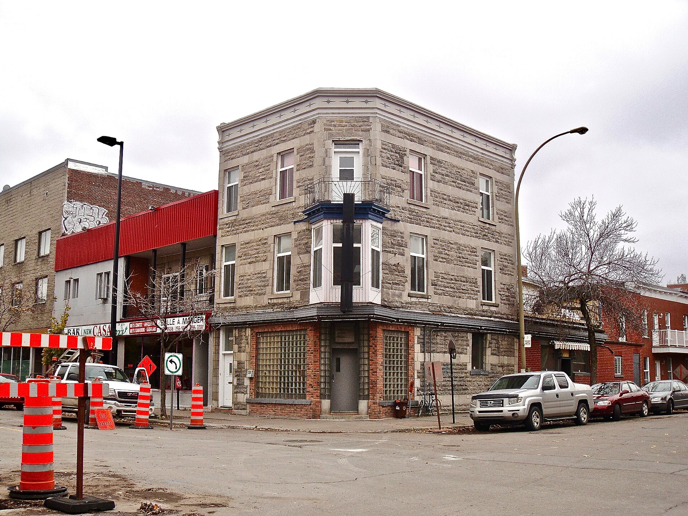
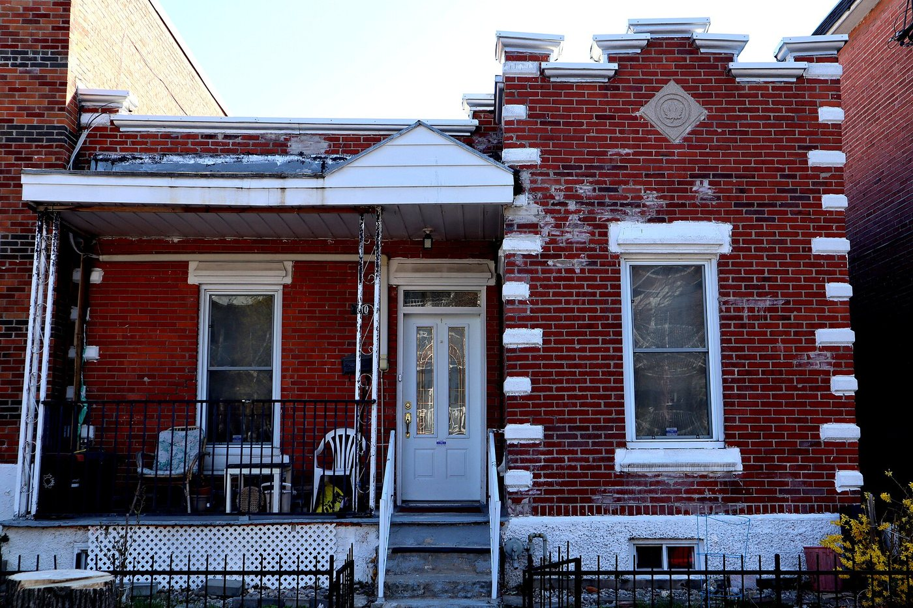

| Place | Local name | Phase years | Storeys | Roof | Window | Cladding | Garage |
|---|---|---|---|---|---|---|---|
| Mercier–Hochelaga-Maisonneuve (borough of Montréal) | Company workers' house of the Hudon mill, rue Saint-Germain La maison ouvrière de la filature Hudon, rue Saint-Germain | 1845 – 1883 | 2 | – | vertical | clay-brick | none |
| Mercier–Hochelaga-Maisonneuve (borough of Montréal) | Shop-and-dwellings block on the commercial artery L'immeuble commercial avec logements, rues Ontario et Sainte-Catherine | 1883 – 1918 | 3 | flat | vertical | grey-limestone, clay-brick | none |
| Mercier–Hochelaga-Maisonneuve (borough of Montréal) | Three-storey workers' plex L'habitation ouvrière de trois étages (« plex ») | 1883 – 1918 | 3 | flat | vertical | grey-limestone, clay-brick-red-brown | none |
| Town of Mount Royal | Faubourg House Maison faubourienne | 1915 – 1935 | 2 | flat | vertical-2to1 | clay-brick-red | detached-or-set-back |
| Le Plateau-Mont-Royal (borough of Montréal) | Faubourg house La maison de faubourg | 1845 – 1880 | – | flat | – | – | none |
| Le Plateau-Mont-Royal (borough of Montréal) | Duplex without front setback Le duplex sans marge de recul avant | 1880 – 1914 | 2 | flat | vertical | clay-brick, rusticated-stone | none |
| Le Plateau-Mont-Royal (borough of Montréal) | Duplex with front setback Le duplex avec marge de recul avant | 1880 – 1914 | 2 | flat-or-false-mansard | vertical-2to1 | clay-brick, rusticated-stone | none |
| Le Plateau-Mont-Royal (borough of Montréal) | Duplex with exterior stair Le duplex avec escalier extérieur | 1880 – 1914 | 2 | flat | vertical-2to1 | clay-brick, stone | none |
| Le Plateau-Mont-Royal (borough of Montréal) | Triplex with interior stair Le triplex avec escalier intérieur | 1880 – 1914 | 3 | flat | – | clay-brick | none |
| Le Plateau-Mont-Royal (borough of Montréal) | Triplex with exterior stair Le triplex avec escalier extérieur | 1880 – 1914 | 3 | flat | – | clay-brick-beige-brown | none |
| Le Plateau-Mont-Royal (borough of Montréal) | Multiplex Le multiplex | 1880 – 1914 | 3 | flat | – | clay-brick | none |
| Québec City | Rudimentary faubourg house Maison de faubourg | 1840 – 1890 | 1–1.5 | gabled | vertical | wood-board-vertical, wood-clapboard, clay-brick, roughcast, stucco | – |
| Rosemont–La Petite-Patrie (borough of Montréal) | Maison shoebox Maison de type « shoebox » | 1904 – 1940 | 1 | flat | vertical | clay-brick-red, clay-brick-beige-brown, wood-clapboard | none |
| Rosemont–La Petite-Patrie (borough of Montréal) | Triplex with exterior stair Triplex de brique avec escalier extérieur | 1885 – 1930 | 3 | flat | vertical | clay-brick-red, clay-brick-beige-brown, grey-limestone | none |
| Rosemont–La Petite-Patrie (borough of Montréal) | Duplex with exterior stair Duplex de brique avec escalier extérieur | 1885 – 1930 | 2 | flat | vertical | clay-brick-red, clay-brick-beige-brown | none |
| Rosemont–La Petite-Patrie (borough of Montréal) | Duplex with interior stair and paired entrances Duplex contigu à escalier intérieur, entrées jumelées | 1904 – 1940 | 2 | flat | vertical | clay-brick-red | none |
| Rosemont–La Petite-Patrie (borough of Montréal) | Conciergerie Conciergerie | 1885 – 1930 | 3 | flat | vertical | clay-brick-red | none |
| Saint-Lambert | Multi-dwelling building of plex type L'immeuble à logements multiples de type plex | 1875 – 1930 | 2–3 | flat | vertical | clay-brick | none |
| Le Sud-Ouest (Montréal) | Village house La maison villageoise | 1760 – 1825 | 1.5 | gabled | square | wood-clapboard, clay-brick | none |
| Le Sud-Ouest (Montréal) | Duplex with interior stair Le duplex avec escalier intérieur | 1875 – 1945 | 2 | flat | vertical-2to1 | clay-brick, stone-rusticated, wood-clapboard | none |
| Le Sud-Ouest (Montréal) | Triplex with interior stair Le triplex avec escalier intérieur | 1875 – 1945 | 3 | flat | vertical-2to1 | clay-brick, stone-rusticated | none |
| Le Sud-Ouest (Montréal) | Duplex with exterior stair Le duplex avec escalier extérieur | 1900 – 1945 | 2 | flat | vertical-2to1 | clay-brick | none |
| Le Sud-Ouest (Montréal) | Multiplex Le multiplex | 1900 – 1945 | 3 | flat | vertical-2to1 | clay-brick, stone-rusticated | none |
| Le Sud-Ouest (Montréal) | Triplex with exterior stair Le triplex avec escalier extérieur | 1900 – 1945 | 3 | flat | vertical-2to1 | clay-brick, stone-rusticated | none |
| Vieux-Terrebonne | Small-gabarit vernacular village house of the Bas-de-la-Côte La maison vernaculaire villageoise du Bas-de-la-Côte | 1832 – 1900 | – | – | – | wood, clay-brick | – |
| Verdun (borough of Montréal) | Three-storey plex with exterior stair L'immeuble de trois étages avec escalier extérieur | 1900 – 1930 | 3 | flat | vertical | clay-brick, stone | none |
| Westmount | Greystone triplex with exterior stair Triplex en pierre grise à escalier extérieur | 1885 – 1900 | – | – | vertical | montreal-greystone | – |



